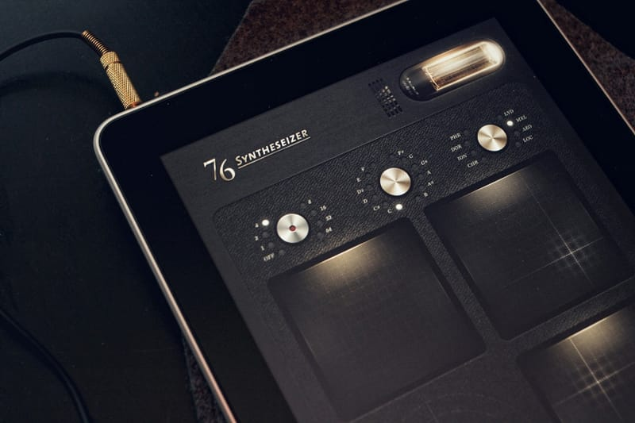
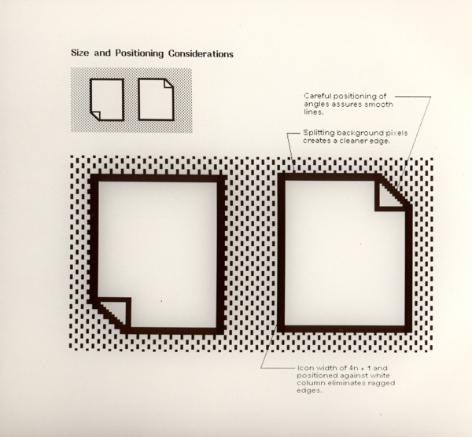

Нормальные шабер (о как!), щипцы, кусачки, пилка и масло стоят порядка 1000 рублей. Это два похода к мастеру. У меня, конечно, еще не так круто получается, но зато я ни разу себя не порезал!)
Word Lens
Просто охрененно!
Success
Success is a journey, not a destination.
by Arthur Ashe
Про эпл, бля

Они, конечно, пидарасы полные, железо у них ебнись какое дорогое, проблем с ним они, сука, не признают, все время какую-нибудь хуйню устраивают, но... покажите мне еще кого-нибудь, кто так надрочил бы своих пользователей любить и делать охуенные штуки?! ведь нет же никого)
Use Caps Lock as Spotlight trigger
Скачать PCKeyboardHack, замаппить спотлайт на, скажем, F13, пойти в System Preferences | PCKeyboardHack, там выбрать "Change Caps Lock" (у меня он отключен в System Preferences | Keyboard | Modifier keys) и ввести 105 (для F13). Вуаля!
А вот как убрать из спотлайта джары (и не хакать систему), я до сих пор не понял (
Earlier icon development

IDEA 10
Один из немногих случаев, когда я почти всем доволен) Спасибо всем, кто помогал! Обниму любого, кто скажет "Идея 10" :)
Нано
Когда уже можно будет забить на то, что футболка красная, а носки белые; что свитер шерстяной, а простынь льняная, а?! Вот же где нужны все ваши нанотехнологии, это же очевидно!